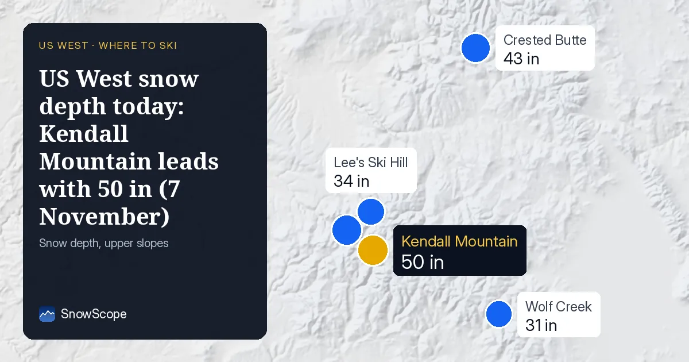

US West snow depth today: Kendall Mountain leads with 50 in (7 November)
Kendall Mountain holds the most snow in the US West today with 50 in (127 cm) on the upper slopes. Telluride and Crested Butte are close behind, both with significant depth at higher elevations where the freeze line sits well below the summits.
See the live snow forecast for Kendall Mountain in the SnowScope appSnow depth, powder alerts and the 3D map, free.
Three resorts leading the region
Kendall Mountain tops the list at 50 in (127 cm) upper slopes. Telluride sits just below with 48 in (123 cm), and Crested Butte holds 43 in (109 cm). These three anchor snow cover across a wide stretch of Colorado peaks. Across the US West, 136 resorts out of 195 have measurable snow today.
The snow-covered area has shrunk since 5 November: from 90,587 sq mi (234,620 km²) down to 74,363 sq mi (192,600 km²). By 10 November, the forecast shows a further drop to 63,054 sq mi (163,310 km²) as the season pushes forward and elevation becomes more critical.
| Resort | Snow depth | New snow, 72 h | Coming, next days | Top |
|---|---|---|---|---|
| Kendall Mountain | 50 in (127 cm) | 0 in (1 cm) | 0 in (0 cm) | 9,528 ft (2,904 m) |
| Telluride | 48 in (123 cm) | 1 in (2 cm) | 0 in (0 cm) | 12,507 ft (3,812 m) |
| Crested Butte | 43 in (109 cm) | 4 in (10 cm) | 0 in (0 cm) | 11,444 ft (3,488 m) |
| Lee's Ski Hill | 34 in (86 cm) | 0 in (1 cm) | 0 in (0 cm) | 7,943 ft (2,421 m) |
| Wolf Creek | 31 in (80 cm) | 0 in (0 cm) | 0 in (0 cm) | 11,762 ft (3,585 m) |

Height is everything right now
At Telluride, depth changes sharply with altitude. The summit holds 41 in (104 cm), mid-mountain drops to 10 in (26 cm), and the base has almost nothing at under 1 in (1 cm). This vertical split means riding to the top gives you much better snow than lower runs.
Crested Butte shows the same pattern. At the top, the SnowScope map shows 40 cm. Dip lower and it thins to just a few centimetres. Early season, you are always choosing high elevation terrain if you want real turns on snow.
What stations actually measured
Real snow stakes tell a slightly different story. Rat Creek (11,680 ft / 3,560 m) held 26 in (66 cm) on the ground as of 1 November, with 9 in (23 cm) falling in the previous 24 hours. Beartown at 11,581 ft (3,530 m) showed the same depth but only 2 in (5 cm) of new snow. Red Mountain Pass (11,060 ft / 3,371 m) measured 24 in (61 cm) with a heavy 11 in (28 cm) dump the day before.
The difference between resort values and station readings matters. Station numbers come from one spot on the ground; resort values describe broader terrain across the mountain. Early in the season especially, local variation is huge.
How this season stacks up
Kendall Mountain today sits close to normal. At 9,413 ft (2,869 m), the SnowScope map shows 2 in (4 cm), which is deeper than 21 of the past 46 winters on this date (normal: 3 in / 8 cm). Not ahead, but not behind either.
Telluride is running ahead of average. At 10,620 ft (3,237 m), the map shows 13 in (33 cm) versus a typical 6 in (14 cm)—deeper than it was on this date in 36 of the past 46 winters. That is a solid early foundation. Crested Butte sits near normal at 3 in (8 cm) mid-mountain, matching historical patterns for early November.
Weather outlook and risk
The freezing level on 9 November will climb to 14,304 ft (4,360 m) across the region, well above most resort tops. Rain and wet snow are likely on exposed slopes that day. South-facing terrain will suffer; north aspects will fare better. The day after, once a cold night resets the snowpack, groomed runs will be more reliable than powder.
Avalanche danger stays low to moderate across these resorts (level 1 to 2 today). Still, if you venture off-piste, check the Colorado Avalanche Information Center bulletin first. Early-season snow bonds poorly to what lies beneath, and thin coverage hides rocks and stumps—stay on open terrain until more base builds.
Tips for skiers
- Ski north-facing slopes and ridgetops over the next few days: they retain snow longest as rain moves in mid-week.
- Thin early snow means rocks can lie just under the surface. Stick to groomed runs and marked terrain until depth increases.
- Check resort websites for lift operations and opening dates before you drive. Having snow on the map is not the same as having terrain open.
- After 9 November when rain falls high up, wait for a cold night and grooming. Icy conditions on south aspects will ease by the following morning.
- Get a snow alert in the SnowScope app to track when fresh snow arrives at Kendall Mountain or Telluride.
About these numbers
Resort snow depths are the deepest snow on the resort's upper slopes on the date shown; they are estimates for an area, not a measurement at one point. Forecasts can change. Always read the official avalanche bulletin before going off-piste.
Official avalanche bulletins: Colorado Avalanche Information Center
Cite this report
For research, teaching or the press: the numbers and charts are free to reuse under CC BY 4.0 with this citation.
SnowScope (2026), US West snow depth today: Kendall Mountain leads with 50 in (7 November), https://snowscope.app/blog/en/2026/11/us-west-snow-depth-today-7-november-2026.html, accessed 2026-11-07
SnowScope (Atlas Labs). (2026, November 7). US West snow depth today: Kendall Mountain leads with 50 in (7 November). SnowScope snow reports. https://snowscope.app/blog/en/2026/11/us-west-snow-depth-today-7-november-2026.html
BibTeX
@misc{snowscope2026uswestsnowdepthtoday7nov,
author = {{SnowScope (Atlas Labs)}},
title = {US West snow depth today: Kendall Mountain leads with 50 in (7 November)},
year = {2026},
month = nov,
howpublished = {\url{https://snowscope.app/blog/en/2026/11/us-west-snow-depth-today-7-november-2026.html}},
note = {Published 2026-11-07 18:30 UTC; accessed 2026-11-07}
}· CC BY 4.0 · Methods, data and tools →
Kendall Mountain: snow and temperature by height, this winter vs last (tools) →
Follow Kendall Mountain
Free: a message when fresh snow is coming, and the forecast every morning.
More snow reports

On 6 November, 3 of 5 major resorts in the US West have snow deeper than the average for this date in the past 46 winters.

Getting to Telluride in winter, airport by airport: Telluride Regional, Montrose, the drive on Highway 145 with the Colorado traction law, and the free gondola to Mountain Village.

Wolf Creek holds 34 in (87 cm) at mid-mountain on a typical 15 December. Peak prices start 20 December. Data: 13 November 2026.